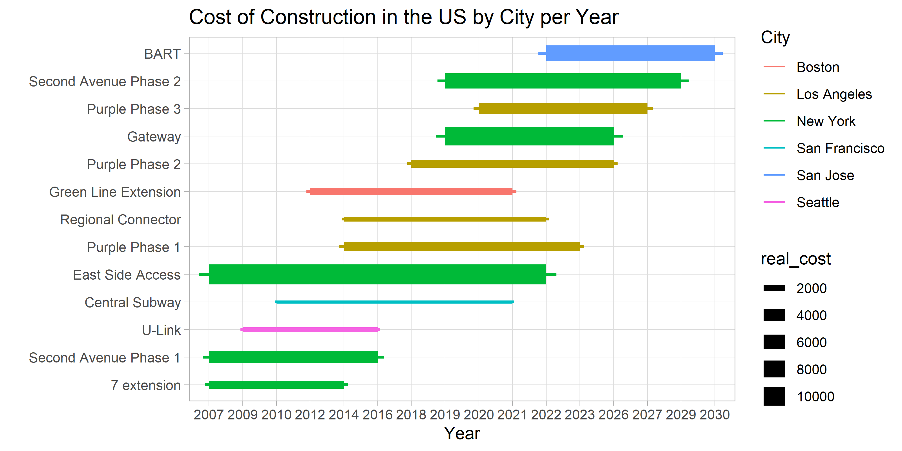
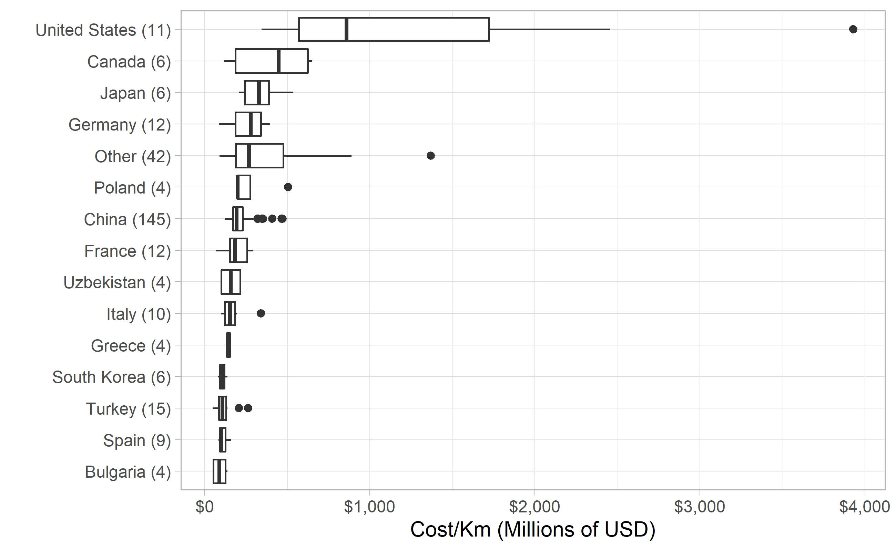
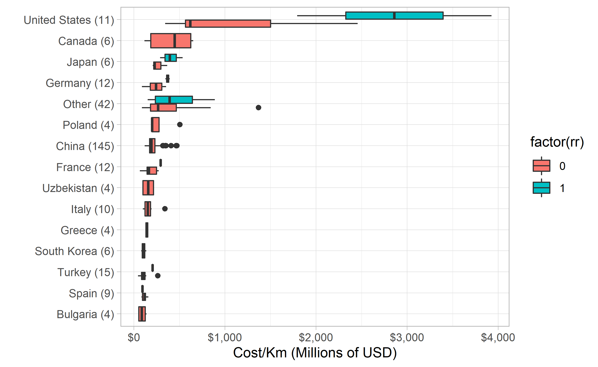
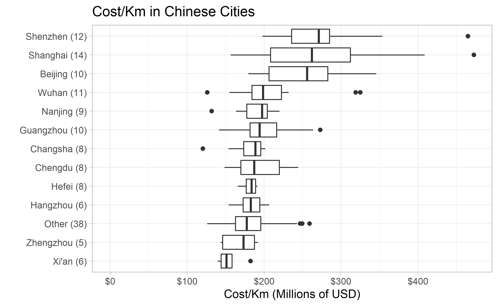
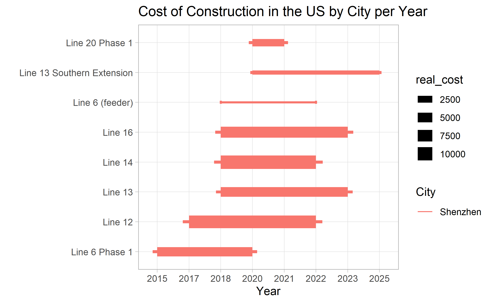
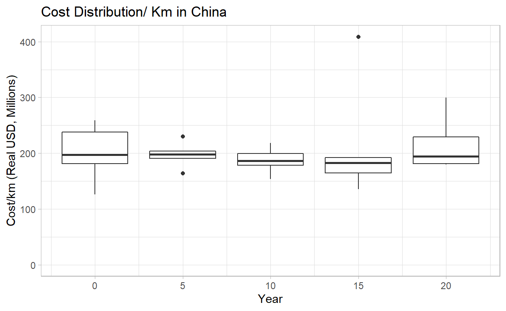
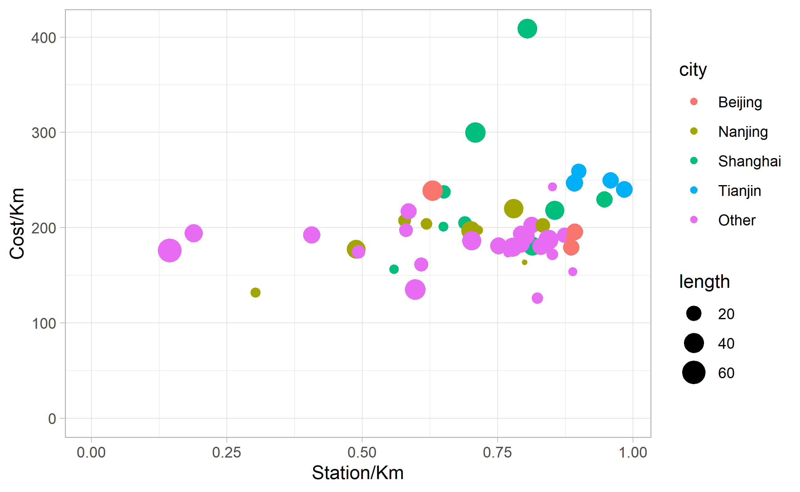

Why do transit-infrastructure projects in New York cost 20 times more on a per kilometer basis than in Seoul? We investigate this question across hundreds of transit projects from around the world. We have created a database that spans more than 50 countries and totals more than 11,000 km of urban rail built since the late 1990s. We will also examine this question in greater detail by carrying out six in-depth case studies that take a closer look at unique considerations and variables that aren’t easily quantified, like project management, governance, and site conditions. The goal of this work is to figure out how to deliver more high-capacity transit projects for a fraction of the cost in countries like the United States. Additionally, we hope that our site will be a useful resource for elected officials, planners, researchers, journalists, advocates, and others interested in contextualizing transit-infrastructure costs and fighting for better projects.
library(tidyverse)
library(scales)
library(glue)
library(countrycode)
library(rmarkdown)
theme_set(theme_light())
knitr::opts_chunk$set(
echo = TRUE,
message = FALSE,
warning = FALSE
)
transit_cost <- read.csv("transit_cost.csv")
transit_cost$X <- NULL
paged_table(transit_cost)
Let’s filter the missing values, and add the country names to the column which has only the code for those countries.
transit_cost <- transit_cost %>%
filter(!is.na(e)) %>%
mutate(country_code=ifelse(country == "UK", "GB",country),
country = countrycode(country_code,"iso2c","country.name"),
real_cost=as.numeric(real_cost),
tunnel_per = tunnel / length)
transit_cost %>%
filter(country=="United States") %>%
mutate(line=fct_reorder(line,year)) %>%
ggplot(aes(xmin=start_year,xmax=end_year,
y=line,color=city,size=real_cost)) +
geom_errorbarh(height=.1) +
labs(x = "Year",
y ="",
color = "City",
title = "Cost of Construction in the US by City per Year")

We will filter only by the constructions that are 100% completed.
transit_cost %>%
filter(!is.na(cost_km_millions),
tunnel_per == 1) %>%
mutate(country=fct_lump(country,12)) %>%
add_count(country) %>%
mutate(country = glue("{ country } ({ n })"),
country=fct_reorder(country,cost_km_millions,na.rm=TRUE)) %>%
ggplot(aes(cost_km_millions,country))+
geom_boxplot()+
scale_x_continuous(labels = dollar)+
labs(x="Cost/Km (Millions of USD)",
y="")

We can see that is a huge discrepancy comparing US with other countries in the world. Why is so much more expensive here?
There is also one construction that cost almost 4 Billion dollars per Kilometer! Which one is that?
transit_cost %>%
filter(!is.na(cost_km_millions),
tunnel_per == 1) %>%
mutate(country=fct_lump(country,12)) %>%
add_count(country) %>%
mutate(country = glue("{ country } ({ n })"),
country=fct_reorder(country,cost_km_millions,na.rm=TRUE)) %>%
ggplot(aes(cost_km_millions,country,fill=factor(rr)))+
geom_boxplot()+
scale_x_continuous(labels = dollar)+
labs(x="Cost/Km (Millions of USD)",
y="")

Most information that we can per country cames from China, so it is reasenable to take a deeper look into it:
transit_cost %>%
filter(!is.na(cost_km_millions),
country=="China",
tunnel_per == 1) %>%
mutate(city=fct_lump(city,12)) %>%
add_count(city) %>%
mutate(city = glue("{ city } ({ n })"),
city=fct_reorder(city,cost_km_millions,na.rm=TRUE)) %>%
ggplot(aes(cost_km_millions,city))+
geom_boxplot()+
scale_x_continuous(labels = dollar)+
labs(x="Cost/Km (Millions of USD)",
y="",
title = "Cost/Km in Chinese Cities") +
expand_limits(x=0)

transit_cost %>%
filter(country=="China",
city=="Shenzhen",
!is.na(start_year),
!is.na(end_year)) %>%
mutate(city = fct_lump(city,5)) %>%
mutate(line=fct_reorder(line,year)) %>%
ggplot(aes(xmin=start_year,xmax=end_year,
y=line,color=city,size=real_cost)) +
geom_errorbarh(height=.1) +
labs(x = "Year",
y ="",
color = "City",
title = "Cost of Construction in the US by City per Year")

transit_cost %>%
filter(tunnel_per==1,
end_year<=2020,
country=="China") %>%
mutate(year=(year%%5)*5) %>%
ggplot(aes(year,cost_km_millions,group=year))+
geom_boxplot()+
expand_limits(y=0)+
labs(y="Cost/km (Real USD, Millions)",
x = "Year",
title="Cost Distribution/ Km in China")

transit_cost %>%
filter(tunnel_per==1,
end_year<=2020,
country=="China") %>%
ggplot(aes(length,stations))+
geom_point()+
geom_smooth(method = lm, se=FALSE)
expand_limits(x=0,y=0)
mapping: x = ~x, y = ~y
geom_blank: na.rm = FALSE
stat_identity: na.rm = FALSE
position_identity transit_cost %>%
filter(tunnel_per==1,
end_year<=2020,
country=="China") %>%
mutate(city=fct_lump(city,4)) %>%
ggplot(aes(stations/length, cost_km_millions, size=length,color=city))+
geom_point()+
expand_limits(x=0,y=0)+
labs(x="Station/Km",
y="Cost/Km")

No strong relationship between stations/km and cost/km. That is quite surprising in my point of view, because I would assume that the highest number of stations to build, the most expensive would be the project. Appears to not be the case in the end.